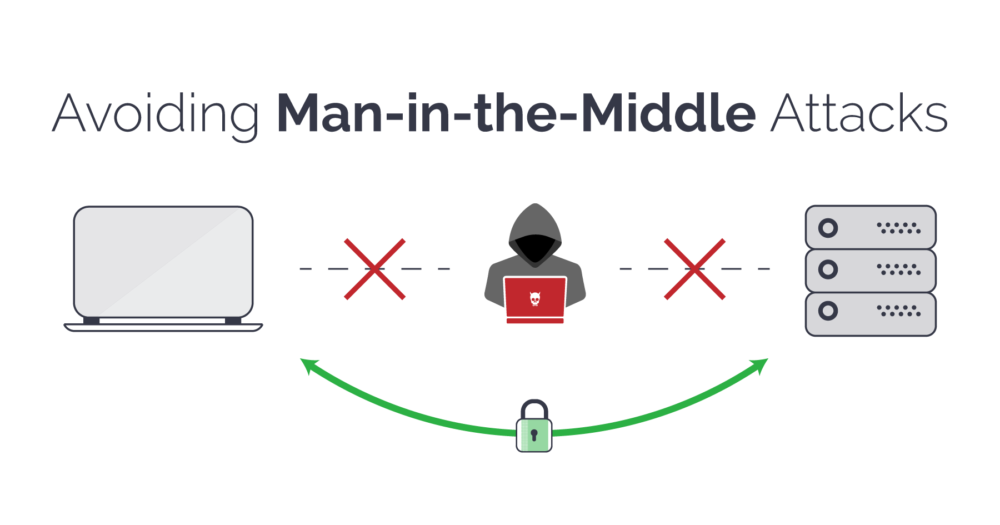

ACT-6

This activity i want to explain some populer types of attacks. There are a lot of types of it of course i can not explain all of them but i will try to explain most populer ones. So first one is MITM ATTACKS (MAN IN THE MIDDLE). May be you can get what is is from the name there is a connection between server and client , somebody takes the place of middle of them and normally datas must go to server but they go to man who takes positon in middle. We can divide 2 the MITM as active and passive. In passive mode attacker just watches and listens the channel without changing , altering anything. So active mode is altering , capturing , interacting.
Let's give an example of it. You will buy new shoes , entered a shopping website with your unique creditials , you choose one and click buy button.
You are filling the necessary areas for buying (your credit card , id number,name,surname,your address...) normally all of this informations directly must go to server but somebody attended the position in the middle also
that informations are going to him/her. Thanks to this method your informations can be stolen and you can have a problem your financial informations.There are good ways for protecting.

First prevetion way is using a VPN There are many cyber security benefits of using a VPN (virtual private network), such as the fact that it masks your IP address by bouncing it through a private server.
VPNs also encrypt the data as it's being transmitted over the Internet. This doesn't make you impenetrable to MITM attacks.
The other way for prevention is the Watching out for phishing scams Attackers may use HTTPS spoofing or email hijacking to craft tailored phishing emails.
(I will explain it the Social Engineering activity.)
Other way is Only visit HTTPS websites As with VPNs, HTTPS websites encrypt data and prevent attackers from intercepting communications.So HTTPS are more secure.
Other populer method is Brute Force That takes much time. You can think the target is a door and you try to find the key with illegal tactics.
The keys are passwords to go deep. If the attacker find true password combinations , can go deep. (This method is hard for now because everybody choose password logically)
And Injection Method As you see from the method name it is about injecting malwares softwares or enter the (especially DBS) Inject fake reports , records etc.
To prevent this method secure of db must be increase and check often , Users must choose good creditials (especially passwords)

The other method is "FAKE WAP" really funny while i was searching honeypots , i found it (actually similar with honeypots).
Attacker creates a fake wireless access point and when you connect it your ip address and other device , network datas have ben stolen
by attackers , as you remember the similar logic with honeypots (Creating a fake web interface when you access it your informations go to third persons.)